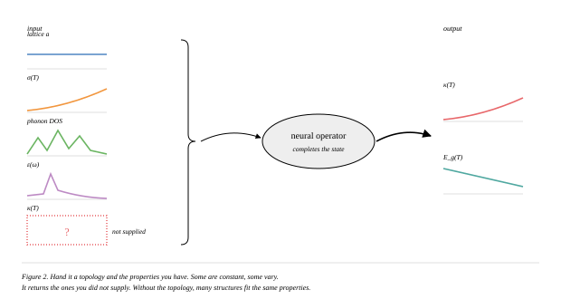
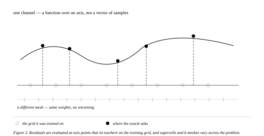
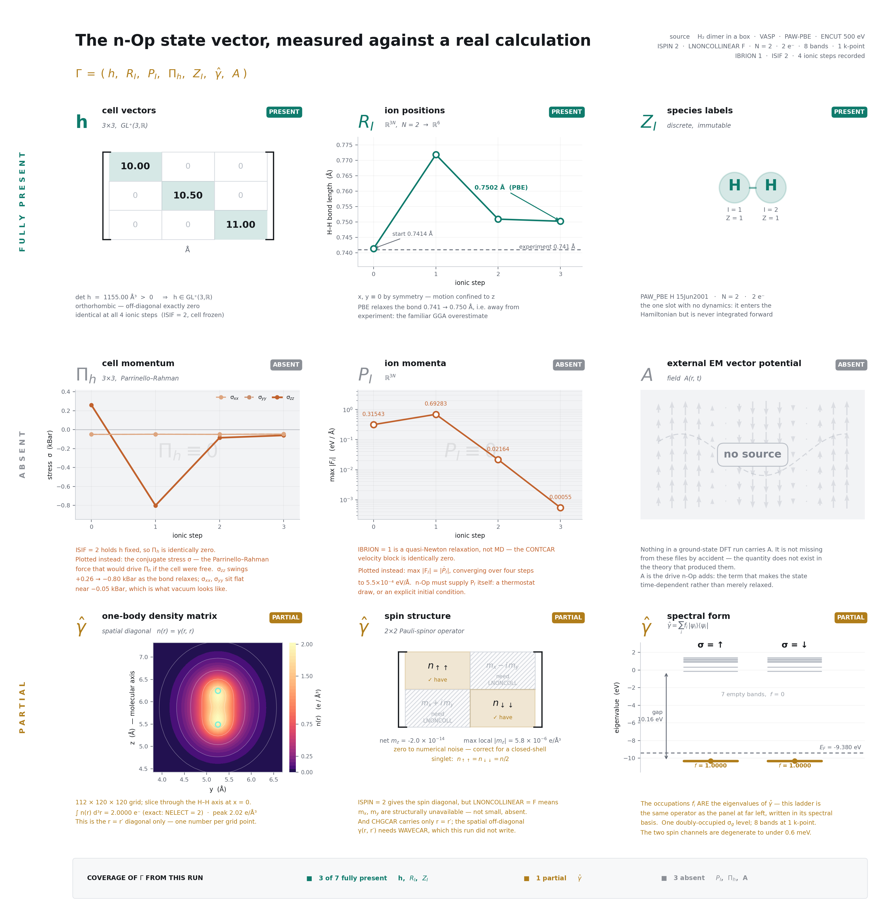
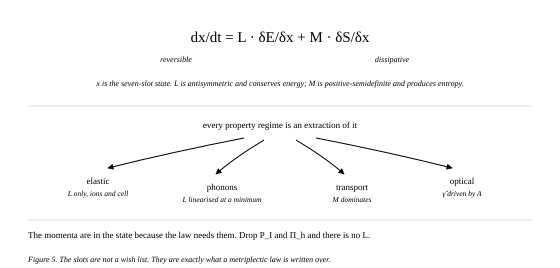
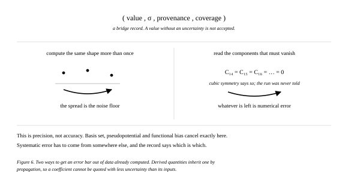
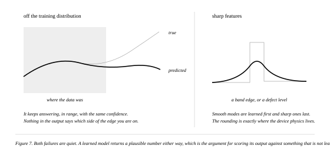
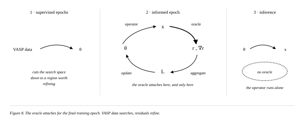
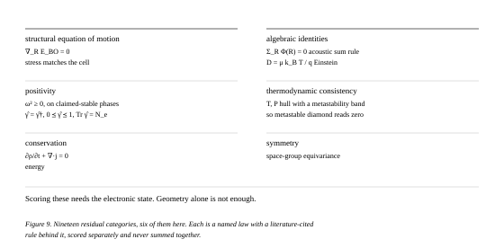

Greyscale per STYLE.md, except figure 2. Slide N uses
fig-N, slides 2–9. Captions sit inside each SVG.
Figure 2 · channel completion — colour

Figure 3 · functions, meshes, and where the oracle asks

Figure 4 · the state vector against a real run — raster, light ground

Figure 5 · the law the slots are written over

Figure 6 · two ways to get an uncertainty

Figure 7 · the two quiet failure modes

Figure 8 · the checker, and where it attaches

Figure 9 · what is actually checked — physics

Backup, in unused/: the seven slots as a plain table, find-versus-check, the closed grammar, the fingerprint gate, strain, clamped-vs-relaxed, cost tiers, Δ-transferability, accuracy targets, refusals, gradient cost, and older cuts.